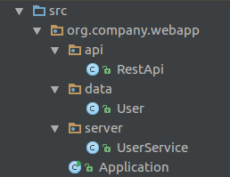
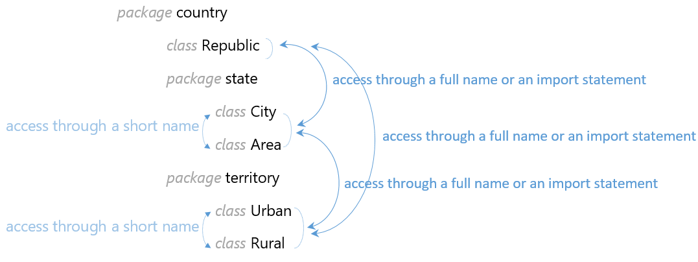

Large Java projects have a lot of classes. It's difficult to manage them if they're stored in the same directory. Packages provide a mechanism for grouping classes together in the same module (or package). In this topic, you will learn how to use them to better systemize your classes and keep your app tidy.
In general, packages have many advantages. They allow us to:
group related classes together, which makes it easier to figure out where a certain class is;
avoid conflicting class names;
control access to classes and members with access modifiers (you'll learn about this in another topic).
According to the naming convention, package names are always lowercase, for example:
model
collection
utilsA package can contain other packages, and the whole structure resembles directories in a file system. Here is an example project with a simple tree of packages and classes.
At the top of the tree, there is a directory src. This is the source root directory. In this tree, the
full name of the class User is org.company.webapp.data.User.
You can output the full name using the following code:
System.out.println(User.class.getName()); // org.company.webapp.data.UserClasses declared
inside a package have a special keyword package at the top of the file.
package org.company.webapp.data;
public class User {
}When you use external libraries, two classes may have the same name. Packages allow us to avoid a conflict of class names because the full class name includes the name of the package. So even if two classes from different packages have the same name, their full names will be different. That is, of course, if there are no conflicts between the package names.
To avoid creating packages with the same names as other public packages, it is generally recommended to start your package hierarchy with the reversed domain name of your company (or another organization). For example:
org.company
org.aumanet
net.labsIf two classes are located in the same package, using one class inside the other is no problem. If this is not the
case and the classes are in different packages, you need to write an import statement to use one class inside the
other. The import statement is defined by the keyword import.
Here is an example. We have two public classes in different packages:
org.aumanet.java.packages.theory.p1.A
org.aumanet.java.packages.theory.p2.BTo use class B inside class A we
should use an import statement.
package org.aumanet.java.packages.theory.p1; // current package
import org.aumanet.java.packages.theory.p2.B; // it's required to use the import
public class A {
public static void method() {
B b = new B();
}
}The package declaration and import statements are optional. If both of them are present, the package must come before all imports! Otherwise, we get a compilation error.
It is also possible to import
all classes from a package. To do this, we need to write * in the import statement instead of a
particular class name.
import org.aumanet.java.packages.theory.p3.*; // import all classes from the packageDon't do this too often. In some cases, this is considered a bad practice and can break the compatibility of your program with new versions of Java. Here is an interesting discussion about such statements.
If two classes belong to the same package, you don't need to import them to each other.
There is a way to use a class from another package without the import statement. In this case, you should write the
full class name (including the full package path) instead of the name of the class itself (short name). This is how
we would use the Scanner class without explicitly importing it first:
java.util.Scanner scanner = new java.util.Scanner(System.in);
java.util.Date now = new java.util.Date();Let's polish the information about access to classes inside the package with the following example:
The classes City and
Area are located in the same subpackage state, so you can use one class inside the other
with a short name. The same thing is true for the classes Urban and Rural
in the subpackage territory.
If you want to use any class of the subpackage
territory inside the class of the subpackage state or vice versa, you need to write the
full name of this class, import the class, or import the whole
subpackage. Moreover, if you want to use classes from the subpackages state or territory
inside the class Republic from the package country or vice versa, you also need to write a
full name or import the class. This should be done even if these
packages are in the same root package (here it is the package country).
There is no difference between importing standard or custom classes.
For example, many Java developers use
java.util.Scanner to work with the standard input/output. In their programs, they include the following
import:
import java.util.Scanner;After this, we can create an instance of the Scanner
class like in the examples above and use it in our programs.
Even though we have to import most packages to
use their classes, there is a Java package that is always automatically imported, namely, java.lang.
This package contains many widely used classes, such as String, System, Long,
Integer, NullPointerException and others.
We can also import static members (methods and fields) of a class inside another class. If we write an asterisk
* in the import statement, we don't need to write the imported class name before invoking static
methods or reading static fields.
Here is an example of the static import of the class Arrays,
which contains a lot of useful methods for processing arrays.
package org.aumanet.java.packages.theory;
import static java.util.Arrays.*; // instead of the statement "import java.util.Arrays;"
public class Main {
public static void main(String[] args) {
int[] numbers = { 10, 4, 5, 47, 5, 12 }; // an array
sort(numbers); // instead of writing Arrays.sort(...)
int[] copy = copyOf(numbers, numbers.length); // instead of writing Arrays.copyOf(...)
}
}If we don't write a package statement before defining our class, it will be placed inside the default package. This package has a big disadvantage — classes located here can't be imported to classes located inside named packages.
The following class can't be used in a class located inside packages since there is no package declaration.
// no package declaration
public class Person {
String firstName;
String lastName;
}Do not use the default package for real applications. It is perfectly fine for simple, educational applications, like "Hello world", but more complex projects will be better in named packages.
Packages are a very useful tool for OOP projects. They allow us to structure the source code better, and they make it more maintainable. That is very important for big projects that can consist of thousands of classes. Packages are also very helpful for avoiding conflicting class names because the full class name includes the path of the whole package. If we're careful with the naming of the package itself, there should be no conflicts!
Another thing to remember is that packages affect the visibility of classes and class members to each other. That means that we should keep in mind the imports, static members, and the default package.
Creating packages even for small applications is great training for your great future projects!